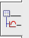
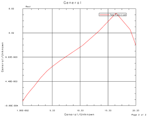
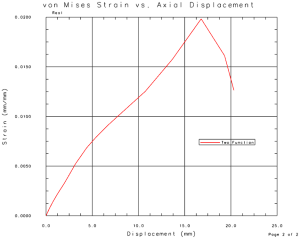

Switch the formatting
If you now activate and apply the default graph template, the formatting of the graph will revert to the default graph template settings.
 XY Function Navigator
-
 Default Graph Template
Default Graph Template -
 Activate and Apply
Activate and Apply
You can activate and apply the graph template you created to recover the formatting you completed in the previous steps.
-
Strain Displacement Graph Template
-
Activate and Apply
